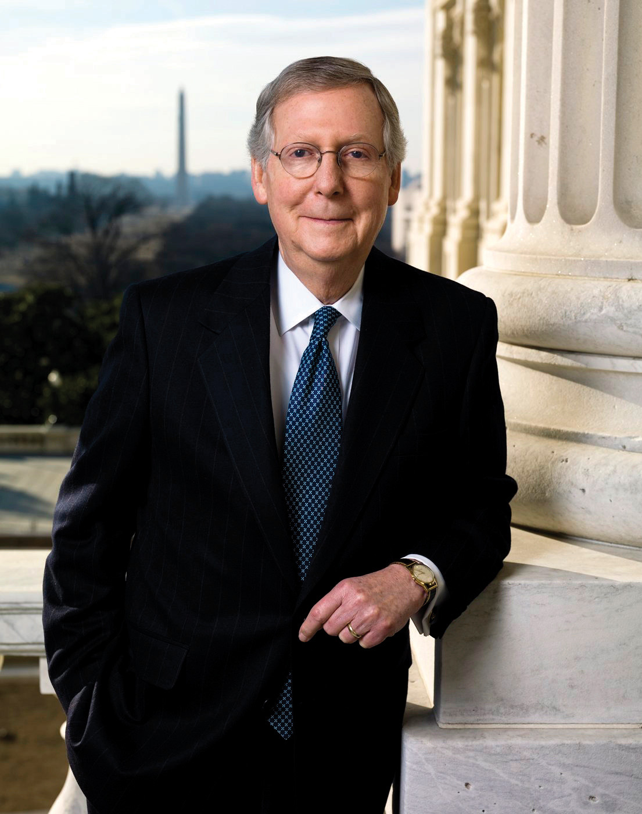

After reading this section, you should be able to answer the following questions:
The Senate leadership structure is similar to that in the House. The smaller chamber lacks the extensive formal rules of the House and thus requires its leaders to use their political and personal relations skills to move legislation through the institution.
The presiding officerThe Constitution designates the vice president as the president of the Senate; when the vice president is absent, the majority leader of the Senate becomes the president pro tempore and presides over the Senate. convenes floor action in the Senate. Unlike the Speaker of the House, the Senate’s presiding officer is not the most visible or powerful member. The Senate majority leader has this distinction.
The Constitution designates the vice president as president of the Senate, although he rarely presides and can vote only to break a tie. Republican senators made sure that Vice President Dick Cheney was on hand for close votes during the 107th Congress, when the number of Democrats and Republican Senators was nearly equal.
In the absence of the vice president, the Constitution provides for the president pro temporeThe second-highest ranking member of the Senate after the vice president who presides over the Senate in the absence of the vice president. to preside. The president pro tempore is the second-highest ranking member of the Senate behind the vice president. By convention, the president pro tempore is the majority party senator with the longest continuous service. The president pro tempore shares presiding officer duties with a handful of junior senators from both parties, who take half-hour shifts in the position.
The Senate majority leaderThe most influential member of the Senate, who is responsible for managing the Senate’s business and managing the floor., who is elected by the majority party, is the most influential member of the Senate. He is responsible for managing the business of the Senate by setting the schedule and overseeing floor activity. He is entitled to the right of first recognitionThe right of the Senate majority leader to speak on the floor before all other Senators., whereby the presiding officer allows him to speak on the floor before other senators. This right gives him a strategic advantage when trying to pass or defeat legislation, as he can seek to limit debate and amendments.
Figure 12.9
Senator Harry Reid, a Democrat from Nevada, is the Senate majority leader.
Source: Photo courtesy of the US Congress, http://commons.wikimedia.org/wiki/File:Harry_Reid_official_portrait_2009.jpg.
The Senate minority leaderThe head of the opposing party in the Senate, who works closely with the majority leader on scheduling business while also developing strategies for his party to promote its policy objectives. is the head of the opposing party. He works closely with the majority leader on scheduling. He confers regularly with members of his party to develop tactics for promoting their interests in the Senate.
Figure 12.10
Senator Mitch McConnell, a Republican from Kentucky, is the Senate minority leader.
Source: Photo courtesy of the US Senate, http://commons.wikimedia.org/wiki/File:Sen_Mitch_McConnell_official.jpg.
Senate whips (assistant floor leaders)Senators who work to devise party strategies on policy issues and to ensure party unity on Senate votes. are referred to as assistant floor leaders, as they fill in when the majority and minority leaders are absent from the floor. Like their House counterparts, Senate whips are charged with devising a party strategy for passing legislation, keeping their party unified on votes, and building coalitions. The Senate whip network is not as extensive as its House counterpart. The greater intimacy of relationships in the Senate makes it easier for floor leaders to know how members will vote without relying on whip counts.
The Senate leadership consists of the presiding officer, majority leader, minority leader, and whips. Unlike in the House, where the Speaker wields considerable power, the presiding officer is not the most visible member of the Senate and can only vote in case of a tie. The majority and minority leaders work together to schedule and manage Senate business. Whips are less important in the Senate than in the House because the closer personal relationships that develop in the smaller body make it easier to know how members will vote without a formal whip count.